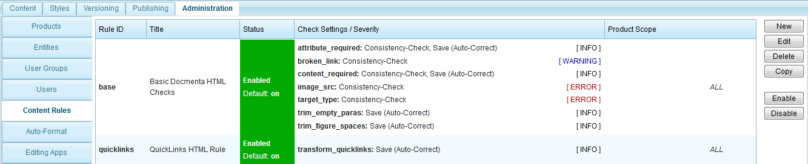

Chapter 4.5. Rule plug-ins
Table of Contents
Content rules can provide one or both of following functionalities:
- Check whether the XHTML stored in content-nodes is conforming to user-defined rules.
- Automatically update the XHTML in content-nodes according to user-defined rules.
A content rule is applied to a content-node in following situations:
- The user saves the content-node using the content-editor.
- The user calls menu item "Consistency-Check" from the node's context menu.
A rule consists of one or more checks. For each check, the rule configuration allows to define whether the check is executed on "Consistency-Check" or on "Save" or in both situations. Furthermore, each check allows to define a severity, which can be either "Error", "Warning" or "Info". Be aware that if a check logs an error and the check is executed on save, then saving fails with a corresponding error message.
After installation of Docmenta, two pre-defined rules exist, namely, "base" and "quicklinks":

Figure 4.5.1. Pre-defined rules
For more information on these pre-defined rules see Section 2.7.6, “Rule configuration”.
Additional content rules can be added through plug-ins. To create a new content rule, the org.docma.plugin.rules.HTMLRule interface needs to be implemented. Note that content rules are also named (X)HTML rules, because content-nodes contain XHTML. As a simple example, we'll create a content rule that provides two checks:
| Check ID | Description |
|---|---|
| check_length | Create a warning if the XHTML content stored in a single node exceeds a configurable length (number of characters). |
| check_empty_span | Create an error if the XHTML content contains empty span elements, namely "<span></span>". If auto-correction is turned on, removes empty span elements. |
To provide an implementation of these two checks, we create a new class, for example myexample.MyHTMLRule, which implements the HTMLRule interface:
public class MyHTMLRule implements org.docma.plugin.rules.HTMLRule
{
private static final String CHECK_LENGTH = "check_length";
private static final String CHECK_EMPTY_SPAN = "check_empty_span";
private int maxLength = Integer.MAX_VALUE;
// To do: implement the interface methods
}
{
private static final String CHECK_LENGTH = "check_length";
private static final String CHECK_EMPTY_SPAN = "check_empty_span";
private int maxLength = Integer.MAX_VALUE;
// To do: implement the interface methods
}
Note that in the class fragment given above, two constants (CHECK_LENGTH and CHECK_EMPTY_SPAN) are defined, which contain the check identifiers. It is always a good idea to declare constants for the check identifiers, because the identifiers have to passed as arguments at several positions. By using declared constants typing errors can be avoided.
Furthermore a field maxLength is defined, which shall store the configured maximum length for the check_length check. This field is initialized in the configure method (see below).
For the sake of modularity, only checks that are related somehow should be implemented within the same rule class. It would also be possible to create a separate rule class for each single check. However, implementing related checks in the same rule class can have advantages concerning performance, because it allows to execute all checks with only a single parsing step.
The org.docma.plugin.rules.HTMLRule interface consists of 10 methods that need to be implemented. The complete source of the myexample.MYHTMLRule class is given below. Following a description of all implemented interface methods.